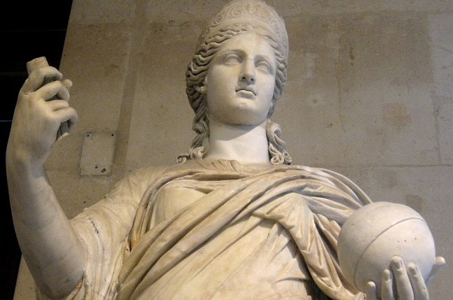

วันวาเลนไทน์ คืออะไร?
เทศกาลวาเลนไทน์ เริ่มมีขึ้นตั้งแต่ยุคที่จักรวรรดิโรมันเรืองอำนาจ ในยุคนั้น วันที่ 14 กุมภาพันธ์ของทุกปี
ถูกจัดให้เป็นวันหยุด เพื่อเป็นเกียรติแต่เทพเจ้าจูโน่ผู้เป็นจักรพรรดินีแห่งเทพเจ้าโรมัน
นอกจากนี้แล้วพระองค์ยังทรงเป็นเทพเจ้าแห่งอิสตรีเพศและการแต่งงาน และในวันถัดมา คือวันที่ 15 กุมภาพันธ์
เป็นวันเริ่มต้นเทศกาลเฉลิมฉลองแห่งลูเพอร์คาร์เลีย การดำเนินชีวิตของหนุ่มสาวจะถูกตัดขาดออกจากกันอย่างสิ้นเชิง
อย่างไรก็ตาม มีขนบธรรมเนียมอย่างหนึ่งของชายหนุ่มก็คือ การจับฉลาก ในวันที่ 14 กุมภาพันธ์
ก่อนที่จะเริ่มต้นเทศกาลลูเพอร์คาร์เลีย ชื่อของเด็กสาวจะถูกเขียนลงในเศษกระดาษและใส่ลงในไห
ชายหนุ่มแต่ละคนจะจับฉลากเพื่อเลือกคู่ในเทศกาลเฉลิมฉลองนี้ บ่อยครั้งที่หนุ่มสาวต่างถูกใจกัน
และแต่งงานกันในเวลาต่อมา

ภาพประกอบ เทพเจ้าจูโน่